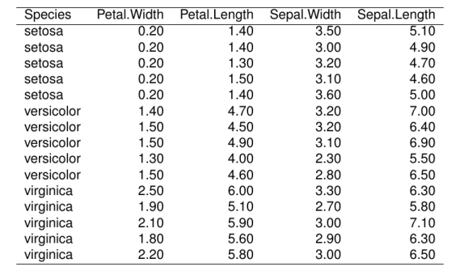
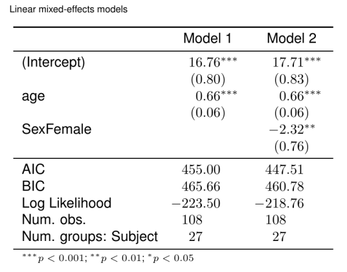

library(texPreview) tex_opts$set( returnType = 'html', opts.html = list(width = '75%', height = '75%') )
knitr
kable
iris_rev <- iris[c(1:5,51:55,101:105),rev(names(iris))] iris_rev%>% knitr::kable(format = "latex",row.names = FALSE)%>% tex_preview()

kableExtra
iris_rev %>% knitr::kable(format = "latex",row.names = FALSE)%>% kableExtra::kable_styling(latex_options = 'striped', stripe_index = c(1:5,11:15))%>% kableExtra::collapse_rows(columns = c(1))%>% tex_preview()

xtable
iris_rev%>% xtable::xtable()%>% tex_preview(print.xtable.opts = list(include.rownames = FALSE))

texreg
Ordinary least squares model (example from the ‘lm’ help file)
ctl <- c(4.17,5.58,5.18,6.11,4.50,4.61,5.17,4.53,5.33,5.14) trt <- c(4.81,4.17,4.41,3.59,5.87,3.83,6.03,4.89,4.32,4.69) group <- gl(2,10,20, labels = c("Ctl","Trt")) weight <- c(ctl, trt) lm(weight ~ group)%>% texreg::texreg(caption.above = TRUE, caption = 'Ordinary least squares model')%>% texPreview::tex_preview()

Linear mixed-effects models
library(nlme) model.1 <- lme(distance ~ age, data = Orthodont, random = ~ 1) model.2 <- lme(distance ~ age + Sex, data = Orthodont, random = ~ 1) list(model.1, model.2)%>% texreg::texreg(booktabs = TRUE, dcolumn = TRUE, caption.above = TRUE, caption = 'Linear mixed-effects models')%>% texPreview::tex_preview()
